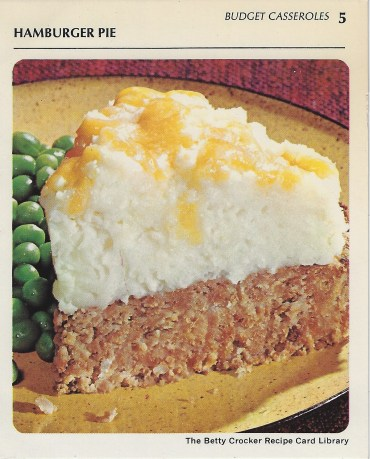

Back to table of contents
Hamburger Pie

Ingredients
- 1 pound ground beef
- 1 egg
- 1 teaspon salt
- 1/8 teaspoon pepper
- 1 tablespoon instant minced onion
- 3/4 cup catsup
- 1 cup milk
- 1/2 (2 ounces) cup shredded sharp Cheddar Cheese
Preparation
- Heat oven to 350°.
Mix meat, 1 1/3 cups of the instant puffs (dry), the egg, salt pepper, onion, catsup and milk.
Spread in ungreased pie pan, 9×1 1/2 inches.
Bake uncovered 35 to 40 minutes.
- Prepare remaining instant puffs as directed on package for 4 servings.
Top baked meat loaf with mashed potatoes; sprinkle with cheese.
Bake 3 to 4 minutes longer or until cheese melts.
Makes 4 to 5 servings.
Food safety is paramount and raw meat can cause foodbourne illnesses.
Please read on how to properly handle raw meat.
STORE, loosely covered, in coldest part of the refrigerator up to 24 hours (if you are planning to use the ground beef within 24 hours of purchasing).
FREEZE for longer storage. Wrap one-pound packs or individual patties in freezer wrap, separating patties with double layer of freezer wrap. Label with date. Store no longer than 4 months.
THAW wrapped 5 to 8 hours in refrigerator or cook patties frozen.